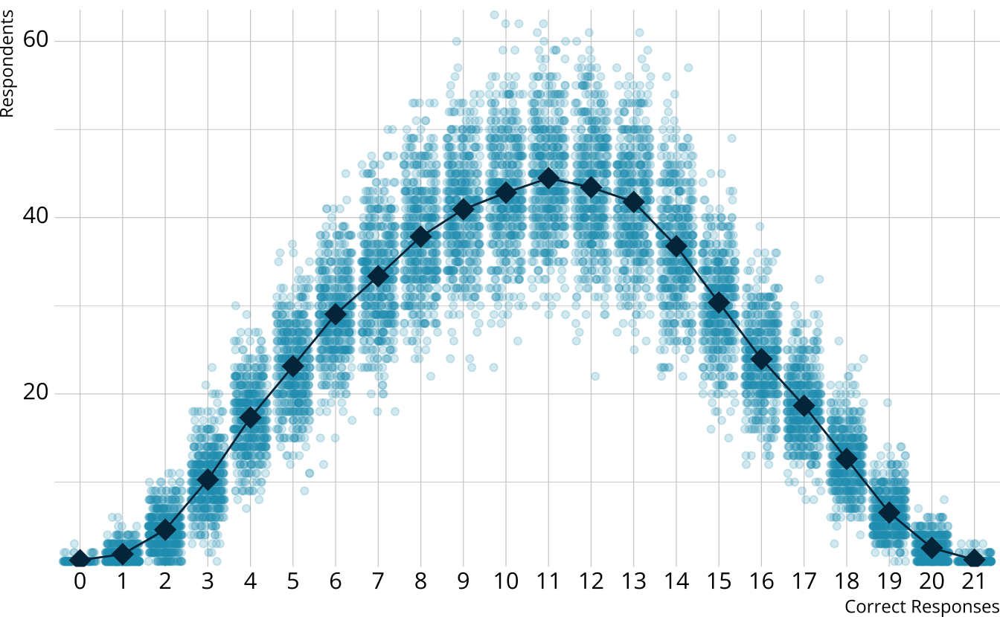

Evaluating model fit
For Bayesian diagnostic classification models
W. Jake Thompson, Ph.D.
Who am I?
W. Jake Thompson, Ph.D.
- Assistant Director of Psychometrics
- ATLAS | University of Kansas
- Research: Applications of diagnostic psychometric models
- Lead psychometrician and Co-PI for the Dynamic Learnings Maps assessments
- PI for an IES-funded project to develop software for diagnostic models
Acknowledgements
The research reported here was supported by the Institute of Education Sciences, U.S. Department of Education, through Grant R305D210045 to the University of Kansas. The opinions expressed are those of the authors and do not represent the views of the the Institute or the U.S. Department of Education.

Model fit for DCMs
-
Absolute fit: How well does a model fit the data?
- Model-level (global) fit
- Item-level fit
- Person-level fit
Relative fit: How well does a model fit compared to another model?
Different methods available depending on how the model was estimated (e.g., maximum likelihood, MCMC)
Absolute fit with limited-information indices
-
Categorical response data create sparse data matrices
- 20 binary items: 220 = 1,048,576 response patterns
Limited-information indices use lower-order summaries of the contingencies tables (Maydue-Olivares & Joe, 2005)
-
Most popular method for model fit in DCMs is the M2 (Hansen et al., 2016; Liu et al., 2016)
- p-value < .05 indicates poor model fit
Bayesian absolute fit
Not constrained to limited-information indices
-
Posterior predictive model checks (PPMCs)
- Generate new data sets from the posterior distribution
- Calculate summary statistics for each generated data set
- Compare the distribution to the observed value of the summary statistic
-
In this study, we examine a PPMC of the the raw score distribution (Park et al., 2015; Thompson, 2019)
- 0.025 < ppp < 0.975 indicates good model fit
Relative fit
Information criteria such as the AIC (Akaike, 1973), BIC (Schwarz, 1978), or similar
-
Compare the information criteria for each competing model
- Index with the lowest value is preferred
These methods are often inappropriate when using a Bayesian estimation process (e.g., MCMC; Hollenbach & Montgomery, 2020)
Bayesian relative fit
Information criteria that are designed for Bayesian estimation methods
-
Leave-one-out (LOO) cross validation with Pareto-smoothed importance sampling (Vehtari et al., 2017)
- Asymptotically equivalent to the widely applicable information criterion (WAIC; Watanabe, 2010), but performs better in a wider range of conditions (Gelman et al., 2014).
-
As with more traditional methods, we compare the LOO for each competing model
- Index with the lowest value is preferred
- Can also calculate the standard error of the difference to help determine if the difference is meaningful
State of the field
Assessment of model fit is primarily limited to methods that rely on point estimates (e.g., M2, AIC, BIC)
Research has not compared the efficacy of Bayesian measures of model fit to the more commonly used measures
-
Recent software advances have made Bayesian estimation of DCMs more accessible to applied researchers
- blatent (Templin, 2023)
- measr (Thompson, 2024)

The current study
Simulation study to evaluate the efficacy of Bayesian measures of model fit
-
Research questions:
- Do Bayesian measures provide an accurate assessment of model fit?
- How does the accuracy compare to more common methods for assessing model fit (e.g., M2)?
Preprint
Simulation design
- 8 test design conditions
- Attributes: 2 or 3
- Items per attribute: 5 or 7
- Sample size: 500 or 1,000
- Within each test design condition, we manipulated the data-generating and estimated model, for 4 total modeling conditions
- Loglinear cognitive diagnostic model (LCDM; Henson et al., 2009)
- Deterministic-input, noisy “and” gate (DINA; de la Torre & Douglas, 2004)
- 32 conditions total, each repeated 50 times
Expected outcomes
| Generating model | Estimated model | Absolute-fit flag | Relative-fit preference |
|---|---|---|---|
| DINA | DINA | No | DINA |
| DINA | LCDM | No | DINA |
| LCDM | DINA | Yes | LCDM |
| LCDM | LCDM | No | LCDM |
Results: Absolute fit
Results: Relative fit
Conclusions
Bayesian methods performed as well or better for absolute fit
Bayesian methods for relative fit performed as well or better than has been reported for other non-Bayesian information criteria
-
Future directions
- Larger, more complex test designs
- Comparison to additional metrics (e.g., RMSEA, SRMSR)
Learn more about measr
Thank you!
Appendix: Calculating the PPMC
raw score distribution χ2
PPMC: Raw score by iteration
- For each iteration, calculate the total number of respondents at each score point
PPMC: Expected counts, by raw score
For each iteration, calculate the total number of respondents at each score point
Calculate the expected number of respondents at each score point

PPMC: Observed counts
For each iteration, calculate the total number of respondents at each score point
Calculate the expected number of respondents at each score point
Calculate the observed number of respondents at each score point
PPMC: χ2 summary statistic
- For each replication, calculate a χ2rep statistic
\[ \chi^2_{rep} = \sum_{s=0}^S\frac{[n_s - E(n_s)]^2}{E(n_s)} \]
#> [1] 25.26204PPMC: χ2 distribution
For each replication, calculate a χ2rep statistic
Create a distribution of the expected value of the χ2 statistic
PPMC: χ2 observed value
For each replication, calculate a χ2rep statistic
Create a distribution of the expected value of the χ2 statistic
Calculate the χ2 value comparing the observed data to the expectation
PPMC: Posterior predictive p-value
Calculate the proportion of χ2rep draws greater than our observed value
Flag if the observed value is outside a predefined boundary (e.g., .025 < ppp < 0.975)
In our example ppp = 0.856